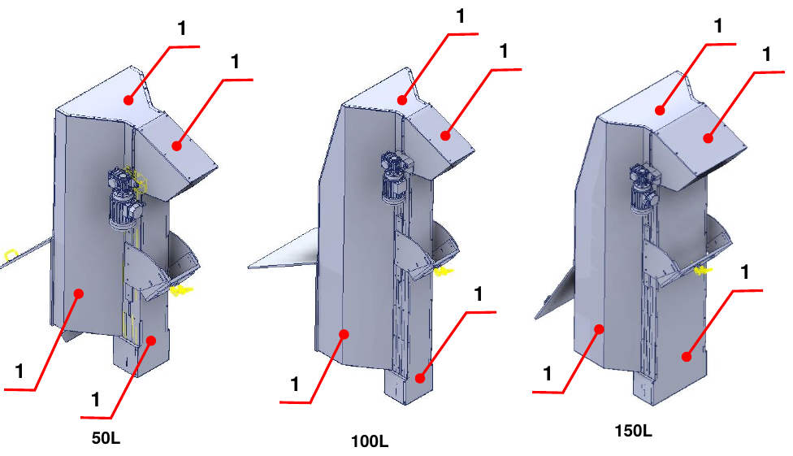

Informazioni Preliminari e Sicurezza#
Important
Prima di installare, utilizzare o effettuare manutenzione sulla macchina, leggere attentamente l’intero manuale e tutta la documentazione allegata.
Il mancato rispetto delle istruzioni riportate può causare:
danni alla macchina;
perdita delle condizioni di sicurezza;
rischi per operatori e manutentori;
decadenza della garanzia.
Introduzione#
Il manuale contiene tutte le informazioni necessarie per installare, utilizzare e mantenere correttamente la quasi-macchina. Il Costruttore impone la lettura del documento al personale incaricato della conduzione e della manutenzione, nonché al personale addetto al trasporto e al montaggio.
Il documento è il manuale di istruzioni per il montaggio delle Motorized Hopper 50 L / 100 L / 150 L (modelli TRM/MOT 50/100/150 D/S) ed è redatto in conformità alla Direttiva Macchine 2006/42/CE. È parte integrante della quasi-macchina e deve essere conservato fino allo smantellamento definitivo, a cura del responsabile della quasi-macchina dopo l’installazione finale.
Note
ARS S.r.l., costruttrice della quasi-macchina, è indicata nel manuale come Costruttore. L’azienda che acquista la quasi-macchina è indicata come Cliente.
Assistenza e Contatti#
L’Ufficio Tecnico del Costruttore è sempre a disposizione per informazioni o chiarimenti su uso, manutenzione, installazione, ecc. Formulare le domande in modo chiaro, con riferimento al manuale e indicando sempre i dati riportati sulla targa di identificazione della quasi-macchina.
Costruttore |
ARS S.r.l. |
Indirizzo |
Via Aretina Nord, 157 – 52041 Pieve al Toppo (AR), Italia |
Contatti |
Tel. +39 0575 398611 · Fax +39 0575 398620 |
E-mail / Web |
info@arsautomation.com · www.arsautomation.com |
Identificazione#
La posizione della targa di identificazione, con i dati principali della quasi-macchina, è indicata nella figura per le tre taglie.

Glossario#
Termine |
Definizione |
|---|---|
Arresto di emergenza |
Funzione destinata a evitare l’insorgere di pericoli o ridurre quelli esistenti per le persone, i danni alla macchina o al lavoro in corso, attivata da una singola azione umana. |
Componente di sicurezza |
Componente destinato a svolgere una funzione di sicurezza, immesso sul mercato separatamente, il cui guasto e/o malfunzionamento mette a repentaglio la sicurezza delle persone, e che non è indispensabile al funzionamento della quasi-macchina. |
Direttiva Macchine |
Direttiva 2006/42/CE del Parlamento europeo e del Consiglio relativa alle macchine. |
Dispositivo di protezione |
Mezzo di protezione diverso da un riparo. |
Fornitore |
Soggetto (costruttore, installatore, integratore di sistemi) che fornisce apparecchiature o servizi associati alla quasi-macchina. |
Funzione di sicurezza |
Funzione della quasi-macchina il cui guasto può comportare un aumento immediato dei rischi. |
Guasto |
Cessazione dell’attitudine di un elemento a svolgere la funzione richiesta. |
Informazioni per l’uso |
Misura di protezione consistente in mezzi di comunicazione (testi, parole, segnali, simboli, diagrammi) usati separatamente o in combinazione per trasmettere informazioni all’utilizzatore. |
Malfunzionamento |
Incapacità di una quasi-macchina di svolgere la funzione prevista. |
Marcatura |
Simbolo e scritta per l’identificazione della quasi-macchina, applicati dal costruttore. |
Materiale |
Prodotto da movimentare. |
Misura di sicurezza |
Mezzo che elimina o riduce un pericolo. |
Operatore |
Persona incaricata di condurre la quasi-macchina. |
Pericolo |
Potenziale fonte di danno. |
Tecnico qualificato / manutentore specializzato |
Persona che ha frequentato corsi di specializzazione, formazione professionale, ecc. ed è esperta di installazione, messa in servizio, manutenzione, riparazioni, trasporto e movimentazione della quasi-macchina. |
Quasi-macchina |
Insieme che costituisce quasi una macchina, ma che non può di per sé garantire un’applicazione specifica. È destinata esclusivamente a essere incorporata o assemblata con altre macchine, quasi-macchine o apparecchiature per costituire una macchina disciplinata dalla direttiva. |
Riparo |
Barriera fisica, progettata come parte della quasi-macchina, per garantire protezione. |
Rischio |
Combinazione della probabilità di un danno e della sua gravità. |
Rischio residuo |
Rischio rimanente dopo l’adozione delle misure di protezione. |
Situazione di emergenza |
Situazione pericolosa che richiede di essere urgentemente terminata o evitata. |
Trasporto |
Insieme delle operazioni per trasferire la quasi-macchina dal luogo di montaggio del costruttore a quello definitivo presso il cliente. |
Uso previsto |
Uso della quasi-macchina in conformità alle informazioni per l’uso fornite nelle istruzioni. |
Uso scorretto ragionevolmente prevedibile |
Uso della quasi-macchina in modo non previsto dal progettista, ma che può derivare da un comportamento umano facilmente prevedibile. |
Utilizzatore |
Soggetto che utilizza la quasi-macchina e le relative apparecchiature elettriche. |
Zona di lavoro |
Volume delimitato dai ripari antinfortunistici e destinato al funzionamento della quasi-macchina. |
Zona pericolosa |
Qualsiasi spazio all’interno e/o intorno alla macchina in cui una persona può essere esposta a un pericolo. |
Simboli Utilizzati nel Manuale#
Simbolo |
Significato |
|---|---|
PERICOLO |
Situazione di pericolo imminente che, se non evitata, può causare lesioni gravi o la morte dell’operatore. Identifica operazioni rigorosamente vietate e procedure obbligatorie da applicare per evitarle. |
AVVERTENZA |
Situazione di potenziale pericolo che, se non evitata, può causare lesioni gravi o la morte dell’operatore. Descrive operazioni che richiedono particolare attenzione. |
ATTENZIONE |
Situazione di pericolo non immediato o potenziale che, se non evitata, può causare lesioni anche lievi o danni alla salute dell’operatore. |
NOTA |
Informazioni importanti e/o procedure che, se ignorate o osservate solo parzialmente, possono danneggiare la quasi-macchina o le attrezzature collegate. |
INFORMAZIONI AGGIUNTIVE |
Informazioni utili e/o rimandi ad altra documentazione (manuali di istruzioni allegati, documenti tecnici o altre sezioni del manuale). |
Norme di Sicurezza#
Prescrizioni, istruzioni, regolamenti e relative note di sicurezza descritti nel manuale definiscono i comportamenti e le regole da seguire nelle attività che costituiscono l’uso previsto della quasi-macchina, per operare in sicurezza per il personale, le attrezzature e l’ambiente circostante. Le istruzioni di sicurezza sono rivolte a tutto il personale autorizzato, addestrato e delegato alle attività di:
trasporto;
installazione;
uso;
gestione;
manutenzione;
pulizia;
messa fuori servizio e smantellamento.
Responsabilità del Costruttore#
Il Costruttore declina ogni responsabilità derivante dall’uso errato o improprio della quasi-macchina e da danni causati dall’uso di ricambi non prescritti, da manutenzioni non correttamente eseguite e da manomissioni di circuiti e componenti.
La responsabilità per l’applicazione dei requisiti di sicurezza spetta al personale tecnico responsabile delle attività previste dalla quasi-macchina, che deve assicurarsi che gli operatori autorizzati siano qualificati, rispettino e conoscano le prescrizioni del manuale e le norme di sicurezza di carattere generale. Il mancato rispetto delle istruzioni di sicurezza può causare lesioni alle persone e danni alle attrezzature.
Gestione della Quasi-macchina#
La gestione è consentita solo a persone autorizzate e adeguatamente addestrate, o comunque con adeguata competenza tecnica. Chi usa e mantiene la quasi-macchina deve sapere che la conoscenza e l’applicazione delle norme di sicurezza sono parte integrante del proprio lavoro.
Prima di avviare la quasi-macchina:
leggere attentamente il manuale;
sapere quali ripari e dispositivi di arresto di emergenza sono presenti, dove si trovano e come funzionano.
È rigorosamente vietata la rimozione, anche parziale, di ripari, dispositivi di sicurezza e targhe di avvertenza applicati sulla quasi-macchina. In caso di malfunzionamento o guasto di tali dispositivi, devono essere riparati o sostituiti immediatamente.
Garanzia#
Il Costruttore garantisce che le proprie macchine sono prive di difetti di materiale e/o di fabbricazione. Per ogni chiarimento fare riferimento alle condizioni contrattuali.
L’acquirente ha diritto solo alla sostituzione delle parti riconosciute difettose; le spese di imballo, trasporto ed eventuale installazione sono a suo carico. In tal caso devono essere specificati: data e numero del documento di acquisto, modello della quasi-macchina, numero di matricola.
Non sono riconosciuti risarcimenti per perdita di produzione causata da eventuali periodi di inattività della quasi-macchina.
Sono esclusi dalla garanzia i danni causati da un uso diverso da quello indicato nel manuale, compresa la manutenzione non conforme alle istruzioni.
La garanzia non è riconosciuta per le quasi-macchine sulle quali sono state eseguite modifiche non autorizzate. Sono rigorosamente vietate modifiche o manomissioni dei dispositivi di sicurezza.
In caso di danni durante il periodo di garanzia, la garanzia è valida solo con l’uso di ricambi originali.
Le riparazioni possono essere eseguite solo da operatori qualificati che conoscono la quasi-macchina.
Sicurezza#
Informazioni generali#
Il Cliente deve istruire gli operatori sui rischi di infortunio, sui dispositivi di sicurezza installati sulla quasi-macchina e sulle norme generali antinfortunistiche previste dalle direttive comunitarie e dalla legislazione del Paese di installazione. Gli operatori devono conoscere la posizione e il funzionamento di tutti i comandi e le caratteristiche della quasi-macchina.
La manomissione o la sostituzione non autorizzata di uno o più componenti, l’adozione di accessori e l’uso di parti diverse da quelle raccomandate possono comportare rischi di infortunio.
Warning
È assolutamente vietato escludere o manomettere i dispositivi di sicurezza della quasi-macchina. Il Costruttore declina ogni responsabilità sulla sicurezza della quasi-macchina in caso di mancato rispetto di questo divieto.
Warning
Spetta all’operatore che utilizza la quasi-macchina assicurarsi che l’area sia sicura e libera da persone e/o oggetti.
Certificazione#
La quasi-macchina è fornita con la Dichiarazione di Incorporazione, in conformità ai requisiti essenziali di sicurezza specificati nella Direttiva Macchine 2006/42/CE (Allegato II B) e nella Direttiva sulla Compatibilità Elettromagnetica 2014/30/UE.
Note
Qualsiasi modifica apportata alla quasi-macchina annulla immediatamente la Certificazione di Incorporazione rilasciata dal Costruttore.
Usi previsti e non previsti#
La quasi-macchina è progettata e costruita per trasportare materiale dal basso verso l’alto tramite un nastro a palette. Non può essere utilizzata per usi diversi da quelli previsti né per la lavorazione di pezzi oltre i limiti concordati.
Danger
L’uso della quasi-macchina per scopi di lavorazione non descritti nel manuale è USO IMPROPRIO. Il Costruttore declina ogni responsabilità per danni a cose e/o persone, ritenendo decaduta ogni tipo di garanzia. Il Costruttore declina ogni responsabilità in caso di manomissione, modifiche non autorizzate o interventi di manutenzione eseguiti da personale non addestrato.
Warning
La quasi-macchina deve essere utilizzata solo da operatori esperti e qualificati, che abbiano letto e compreso il contenuto del manuale.
Note
È vietato eseguire qualsiasi movimento in caso di comportamento anomalo della quasi-macchina o di mancanza di alimentazione, perché è competenza specifica del personale di manutenzione.
Condizioni ambientali di funzionamento#
La quasi-macchina deve essere installata in un ambiente coperto, dotato di tutte le misure di sicurezza previste dalle leggi vigenti nel Paese dell’utilizzatore.
Aspetto |
Indicazione |
|---|---|
Protezione antincendio |
La quasi-macchina non è dotata di un proprio sistema antincendio. |
Atmosfera esplosiva |
Non è progettata né costruita per lavorare in atmosfere esplosive o parzialmente esplosive. |
Illuminazione |
Non dispone di un proprio sistema di illuminazione: è dovere e responsabilità del cliente collocarla in un’area adeguatamente illuminata. |
Rumore |
Misurato in conformità alle norme acustiche. Senza carico, il rumore complessivo generato è inferiore a 75 dB(A), misurato nella postazione dell’operatore. Il livello effettivo dipende dal tipo di lavorazione; la misurazione dell’esposizione dei lavoratori al rumore spetta all’utilizzatore, secondo la legislazione vigente nel suo Paese. |
Emissioni elettromagnetiche |
I valori di emissione sono conformi alle norme grazie all’uso di componenti compatibili EMC, collegamenti adeguati e, ove necessario, filtri. Una manutenzione non conforme sull’impianto elettrico o una sostituzione errata di componenti può comprometterne l’efficacia. |
Vibrazioni |
La quasi-macchina non produce vibrazioni pericolose per la salute del personale. Vibrazioni eccessive possono essere causate solo da un guasto meccanico, da segnalare ed eliminare immediatamente. |
Funzioni di sicurezza#
Tipo di dispositivo |
Funzione |
|---|---|
Ripari fissi |
Segregazione delle zone pericolose della quasi-macchina. |
Ripari fissi: impediscono l’accesso alle parti in movimento durante il funzionamento. Non sono controllati e la loro rimozione deve avvenire solo per operazioni di manutenzione, con le fonti di energia della quasi-macchina scollegate.

Warning
Il Costruttore non è in alcun modo responsabile se la quasi-macchina viene utilizzata con ripari incompleti, aperti e/o non installati.
Dispositivi di Protezione Individuale (DPI)#
L’operatore deve utilizzare i dispositivi di protezione individuale per ridurre al minimo la possibilità di rischi.
Warning
Il personale deve indossare abiti da lavoro adeguati per prevenire gli infortuni. Per evitare rischi meccanici (trascinamento, intrappolamento, ecc.) tenere i capelli raccolti e non indossare braccialetti, orologi, anelli o catenine.
Note
L’abbigliamento di chi lavora o esegue manutenzione sulla quasi-macchina deve rispettare i requisiti essenziali di sicurezza stabiliti dalle direttive UE e dalle leggi del Paese di installazione.
Rischi residui#
In fase di progettazione sono state valutate tutte le zone o parti ad alto rischio e sono state adottate le precauzioni necessarie per evitare rischi alle persone e danni ai componenti della quasi-macchina. Dall’analisi dei rischi eseguita, conservata nel Fascicolo Tecnico del Costruttore, non risultano rischi residui.
Warning
Controllare periodicamente il funzionamento di tutti i dispositivi di sicurezza. Non rimuovere i ripari installati.
Targhe applicate alla quasi-macchina#
Il Costruttore ha installato sulla quasi-macchina una serie di targhe di avvertenza, definite in conformità alle norme europee sui simboli grafici da utilizzare e collocate in posizione ben visibile. Il servizio di manutenzione deve sostituire immediatamente tutte le targhe che, per usura, diventino illeggibili.
Warning
È assolutamente vietato rimuovere le targhe di avvertenza applicate sulla quasi-macchina. Il Costruttore declina ogni responsabilità sulla sicurezza della quasi-macchina in caso di mancato rispetto di questo divieto.
Note
Per le informazioni sulle targhe di avvertenza installate sulle parti incorporate della quasi-macchina consultare i manuali specifici.

Targa |
Descrizione |
|---|---|
1 |
Divieto di intervenire su organi in movimento. |
2 |
Divieto di rimuovere i dispositivi di sicurezza. |
3 |
Obbligo di leggere il manuale d’uso e manutenzione. |